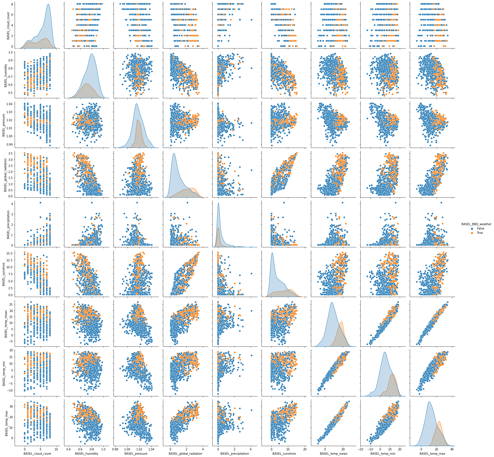

Content from Using Markdown
Last updated on 2022-04-22 | Edit this page
Overview
Questions
- How do you write a lesson using Markdown and sandpaper?
Objectives
- Explain how to use markdown with The Carpentries Workbench
- Demonstrate how to include pieces of code, figures, and nested challenge blocks
Introduction
This is a lesson created via The Carpentries Workbench. It is written in Pandoc-flavored Markdown for static files and R Markdown for dynamic files that can render code into output. Please refer to the Introduction to The Carpentries Workbench for full documentation.
What you need to know is that there are three sections required for a valid Carpentries lesson:
-
questionsare displayed at the beginning of the episode to prime the learner for the content. -
objectivesare the learning objectives for an episode displayed with the questions. -
keypointsare displayed at the end of the episode to reinforce the objectives.
OUTPUT
[1] "This new lesson looks good"You can add a line with at least three colons and a solution tag.
Figures
You can use standard markdown for static figures with the following syntax:
{alt='alt text for accessibility purposes'}
Math
One of our episodes contains \(\LaTeX\) equations when describing how to create dynamic reports with {knitr}, so we now use mathjax to describe this:
$\alpha = \dfrac{1}{(1 - \beta)^2}$ becomes: \(\alpha = \dfrac{1}{(1 - \beta)^2}\)
Cool, right?
Content from Exploring the dataset
Last updated on 2022-08-31 | Edit this page
Overview
Questions
- What should I look for when exploring a dataset for machine learning?
- How do I split the dataset using scikitlearn?
Objectives
- Get to know the weather prediction dataset
- Know the steps in the machine learning workflow
- Know how to do exploratory data analysis
- Know how to split the data in train and test set
Supervised versus unsupervised machine learning
Remember we make the following distinction:
- Supervised models try to predict a (dependent) variable, called the target, that is available during training time
- Unsupervised models try to find structure or patterns in the data, without a specific target
Challenge: Supervised or unsupervised
For the following problems, do you think you need a supervised or unsupervised approach?
- Find numerical representations for words in a language (word vectors) that contain semantic information on the word
- Determine whether a tumor is benign or malign, based on an MRI-scan
- Predict the age of a patient, based on an EEG-scan
- Cluster observations of plants into groups of individuals that have similar properties, possibly belonging to the same species
- Your own problem and dataset
- Unsupervised
- Supervised
- Supervised
- Unsupervised
- Discuss!
Machine learning workflow
For most machine learning approaches, we have to take the following steps:
- Data cleaning and preperation
- Split data into train and test set
- Optional: Feature selection
- Use cross validation to:
- Train one or more ML models on the train set
- Choose optimal model / parameter settings based on some metric
- Calculate final model performance on the test set
Weather prediction dataset
Here we want to work with the weather prediction dataset. It contains daily weather observations from 18 different European cities or places through the years 2000 to 2010. For all locations the data contains the variables ‘mean temperature’, ‘max temperature’, and ‘min temperature’. In addition, for multiple of the following variables are provided: ‘cloud_cover’, ‘wind_speed’, ‘wind_gust’, ‘humidity’, ‘pressure’, ‘global_radiation’, ‘precipitation’, ‘sunshine’, but not all of them are provided for all locations. A more extensive description of the dataset including the different physical units is given in accompanying metadata file.

There are several tasks that one could think of given this data. For now, we are intested in the question: how likely is it to be nice weather for a barbecue tomorrow (that is, sunny and no rain) in Basel, given the weather conditions in all cities today?
A supervised binary classification task.
Loading the data
We load the data directly from a URL.
PYTHON
url_features = 'https://zenodo.org/record/5071376/files/weather_prediction_dataset.csv?download=1'
url_labels = 'https://zenodo.org/record/5071376/files/weather_prediction_bbq_labels.csv?download=1'
weather_features = pd.read_csv(url_features)
weather_labels = pd.read_csv(url_labels)Let’s take a look at the first 5 rows of the features:
PYTHON
weather_features.head()And let’s look at the labels data:
PYTHON
weather_labels.head()We can inspect the shape of the data:
PYTHON
print(weather_labels.shape)OUTPUT
(3654, 18)Let’s print all the column names:
PYTHON
for c in weather_features.columns:
print(c)OUTPUT
DATE
MONTH
BASEL_cloud_cover
BASEL_humidity
...1. & 2. How many features and samples??
PYTHON
# Nr of columns, nr of rows:
weather_features.shapeOUTPUT
(3654, 165)So we have 3654 samples. Of the 165 columns, the first column is the date, we ommit this column for prediction. The second column is Month, this could be a useful feature but we will only use the numerical features for now. So we have 163 features left.
Data selection
For the purposes of this lesson, we select only the first 3 years. We also remove all columns that cannot be used for prediction, and merge the features and labels into one dataframe.
PYTHON
nr_rows = 365*3
weather_3years = weather_features.drop(columns=['DATE', 'MONTH'])
weather_3years = weather_3years[:nr_rows]
# Need to take next day as target!
weather_3years['BASEL_BBQ_weather'] = list(weather_labels[1:nr_rows+1]['BASEL_BBQ_weather'])
print(weather_3years.shape)OUTPUT
(1095, 164)Let’s look at the head of the data we just created:
PYTHON
weather_3years.head()Split into train and test
Before doing further exploration of the data, we held out part of the data as test set for later. This way, no information from the test set will leak to the model we are going to create
PYTHON
from sklearn.model_selection import train_test_splitPYTHON
data_train, data_test = train_test_split(weather_3years, test_size=0.3, random_state=0)PYTHON
len(data_train), len(data_test)OUTPUT
(766, 329)We write the train and test set to csv files because we will be needing them later. We create the data directory if it does not exist.
PYTHON
import os
if not os.path.exists('data'):
os.mkdir('data')
data_train.to_csv('data/weather_train.csv', index=False)
data_test.to_csv('data/weather_test.csv', index=False)Some more data exploration using visualization
Let’s visualize the numerical feature columns. One nice visualization for datasets with relatively few attributes is the Pair Plot. This can be created using sns.pairplot(...). It shows a scatterplot of each attribute plotted against each of the other attributes. By using the hue='BASEL_BBQ_weather' setting for the pairplot the graphs on the diagonal are layered kernel density estimate plots.
Because we have so many features, we plot the features only for Basel itself (not the other cities).
Note that we use a list comprehension here, a short notation for creating a new list based on values in an existing list
PYTHON
columns_basel = [c for c in data_train.columns if c.startswith('BASEL')]
data_plot = data_train[columns_basel]PYTHON
sns.pairplot(data_plot, hue='BASEL_BBQ_weather')Output: 
Content from Preparing your data for machine learning
Last updated on 2022-08-31 | Edit this page
Overview
Questions
- How do I check for missing data?
- How can I scale the data?
Objectives
- Know how to check for missing data
- Be able to scale your data using scikitlearn’s scalers
Missing data
We splitted our data into train and test, but did not make any other modifications. To make our data fit for machine learning, we need to:
- Handle missing, corrupt or incorrect data
- Do feature normalization
Let’s start by looking how much missing data we have:
PYTHON
import pandas as pd
weather_train = pd.read_csv('data/weather_train.csv')
weather_train.isna().sum().sum()OUTPUT
0We have no missing values so we can continue.
It could also be that we have corrupt data, leading e.g. to outliers in the data set. The pair plot in the previous episode could have hinted to this. For this dataset, we don’t need to do anything about outliers.
Feature normalization
As we saw in the pairplot, the magnitudes of the different features are not directly comparable with each other. Some of the features are in mm, others in degrees celcius, and the scales are different.
Most Machine Learning algorithms regard all features together in one multi-dimensional space. To do calculations in this space that make sense, the features should be comparable to each other, e.g. they should be scaled. There are two options for scaling:
- Normalization (Min-Max scaling)
- Standardization (scale by mean and variance)
In this case, we choose min_max scaling, because we do not know much about the distribution of our features. If we know that (some) features have a normal distribution, it makes more sense to do standardization.
PYTHON
import sklearn.preprocessing
min_max_scaler = sklearn.preprocessing.MinMaxScaler()
feature_names = weather_train.columns[:-1]
weather_train_scaled = weather_train.copy()
weather_train_scaled[feature_names] = min_max_scaler.fit_transform(weather_train[feature_names])Let’s look at the statistics before scaling:
PYTHON
weather_train.describe()And after scaling:
PYTHON
weather_train_scaled.describe()We save the data to use in our next notebook
PYTHON
weather_train_scaled.to_csv('data/weather_train_scaled.csv', index=False)